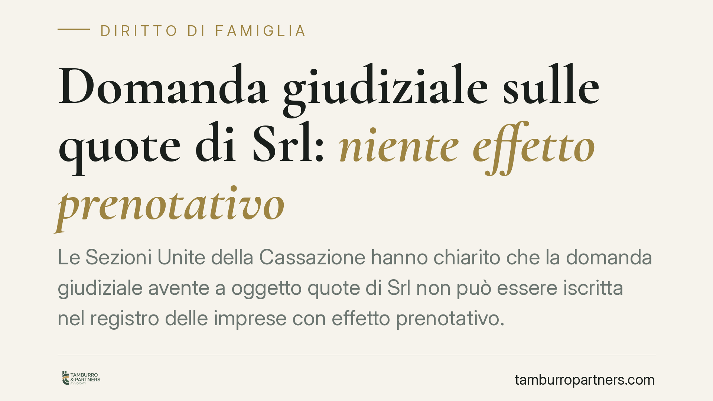

Domanda giudiziale sulle quote di Srl: niente effetto prenotativo
Le Sezioni Unite della Cassazione hanno chiarito che la domanda giudiziale avente a oggetto quote di Srl non può essere iscritta nel registro delle imprese con effetto prenotativo. A differenza degli immobili, per le partecipazioni manca un meccanismo di pubblicità che renda opponibile ai terzi l'esito della lite. La questione incide direttamente sulle azioni di riduzione successorie che colpiscono quote societarie.

Il caso
Una recente pronuncia delle Sezioni Unite affronta un nodo pratico ricorrente: è possibile iscrivere nel registro delle imprese la domanda giudiziale che ha per oggetto quote di una società a responsabilità limitata, così da "bloccare" la posizione a vantaggio di chi agisce?
La risposta è negativa. Per le partecipazioni sociali non esiste un meccanismo equivalente alla trascrizione della domanda giudiziale prevista in materia immobiliare. La lite non produce un effetto prenotativo opponibile a chi, nel frattempo, acquisti la quota.
La vicenda era sorta in sede successoria: un legittimario — cioè l'erede a cui la legge riserva una quota minima del patrimonio — intendeva tutelare la propria pretesa su quote societarie cadute in successione.
Inquadramento normativo
Occorre distinguere due forme di pubblicità diverse per funzione.
Il registro delle imprese (art. 2188 cod. civ.) assolve una funzione di pubblicità dichiarativa o notizia relativa agli atti e ai fatti societari. L'art. 2470 cod. civ. disciplina l'efficacia del trasferimento della quota verso la società e i terzi, mentre l'art. 2471 cod. civ. regola l'espropriazione della partecipazione. In questo impianto non è prevista l'iscrizione della domanda giudiziale con valore prenotativo.
Diverso è il regime immobiliare. Gli artt. 2652 e 2653 cod. civ. consentono di trascrivere determinate domande giudiziali, così da rendere opponibile la futura sentenza anche a chi abbia acquistato il bene dopo l'iscrizione della lite. È il cosiddetto effetto prenotativo: la trascrizione "fotografa" la contesa e la rende efficace verso i terzi.
Le Sezioni Unite rilevano che questo effetto non è trasferibile alle quote di Srl per via analogica. La pubblicità commerciale e quella immobiliare rispondono a logiche distinte, e in assenza di una previsione espressa non si può estendere alle partecipazioni la protezione tipica dei registri immobiliari.
Sul versante successorio, va ricordato che la riserva a favore dei legittimari è disciplinata dagli artt. 536 e seguenti cod. civ.; l'art. 542 cod. civ. regola, in particolare, il concorso tra coniuge e figli. L'azione di riduzione, strumento con cui il legittimario fa valere la lesione della propria quota, è prevista dagli artt. 553 e seguenti cod. civ.
Implicazioni pratiche
La differenza tra immobili e quote diventa decisiva.
Chi agisce su un immobile può trascrivere la domanda e proteggere la propria pretesa anche se il bene viene venduto a terzi in corso di causa: la sentenza favorevole "segue" il bene.
Chi agisce su quote di Srl non dispone di questa tutela. Durante il giudizio il titolare della quota può cederla, e l'acquirente — se in buona fede — resta estraneo all'esito della lite. Il vincitore della causa potrà, nei casi, ottenere il valore equivalente o agire con altri strumenti, ma non vedrà automaticamente "ritornare" la quota.
Per il legittimario che intende colpire quote societarie con l'azione di riduzione, ciò significa un'esposizione maggiore al rischio di atti dispositivi compiuti dal convenuto in pendenza del giudizio.
Cosa fare in concreto
- Verificare la natura dei beni in contesa: per le quote di Srl non si può contare sull'effetto prenotativo della trascrizione.
- Valutare, con il legale incaricato, l'adozione di misure cautelari idonee a conservare la garanzia, come il sequestro conservativo della partecipazione quando ne ricorrano i presupposti.
- Monitorare le visure del registro delle imprese per intercettare tempestivamente eventuali trasferimenti della quota durante la lite.
- Nelle operazioni di acquisto di quote, svolgere una due diligence sull'esistenza di contenziosi o pretese successorie gravanti sul cedente.
- In ambito successorio, ricostruire per tempo la composizione dell'asse ereditario e la presenza di partecipazioni, per impostare correttamente l'eventuale azione di riduzione.
La pronuncia conferma che la tutela delle quote societarie richiede strumenti diversi da quelli immobiliari. La scelta della strategia va calibrata caso per caso, tenendo conto della natura del bene e dei tempi del giudizio.
Ogni famiglia ha il suo equilibrio.
Separazione, divorzio, affidamento, assegno: se vuoi un confronto riservato su una specifica situazione, scrivi allo studio. Ti rispondiamo entro un giorno lavorativo.